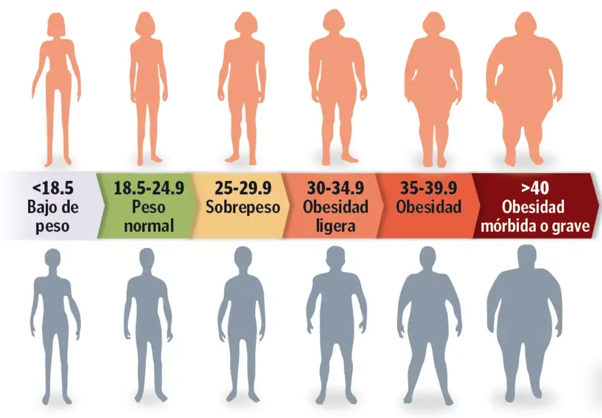

IMC
El Índice de Masa Corporal (IMC) es una medida utilizada para evaluar si una persona tiene un peso saludable en relación con su altura.
Se calcula dividiendo el peso de una persona en kilogramos entre el cuadrado de su altura en metros (kg/m²).
Es una herramienta sencilla que permite clasificar a las personas en diferentes categorías de peso y su correspondiente riesgo para la salud.
¿Por qué es importante el IMC?
El IMC es una herramienta útil porque ayuda a detectar posibles problemas de salud.
Al haber calculado anteriormente tu IMC, observa en la imagen y verifica tu estado actual.

Ahora dirigite al ChatBot y pidele un rutina saludable para ti ;)